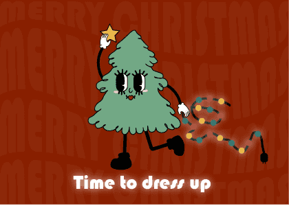

你的瀏覽器不支援影片播放 Live Demo To-do List｜簡單代辦清單小工具 用最少的介面完成日常代辦；儲存localStorage、快速鍵操作，部署在 GitHub Pages。 #Mini Project #HTML/CSS/JS #GitHub Pages Demo Repo Read more
你的瀏覽器不支援影片播放 Live Demo 圖片儲存庫｜快速存下自己參考的照片 用最少的介面完成日常代辦；儲存localStorage、快速鍵操作，部署在 GitHub Pages。 #Mini Project #HTML/CSS/JS #GitHub Pages Demo Repo Read more
你的瀏覽器不支援影片播放 Live Demo 轉盤｜快速做決定 用的轉盤，方便自己快速使用，並且可以將常用的東西出存起來，部署在 GitHub Pages。 #Mini Project #HTML/CSS/JS #GitHub Pages Demo Repo Read more
 繪圖 繪圖 2D｜繪圖 用的轉盤，方便自己快速使用，並且可以將常用的東西出存起來，部署在 GitHub Pages。 #Mini Project #Illustrator #procreate Read more